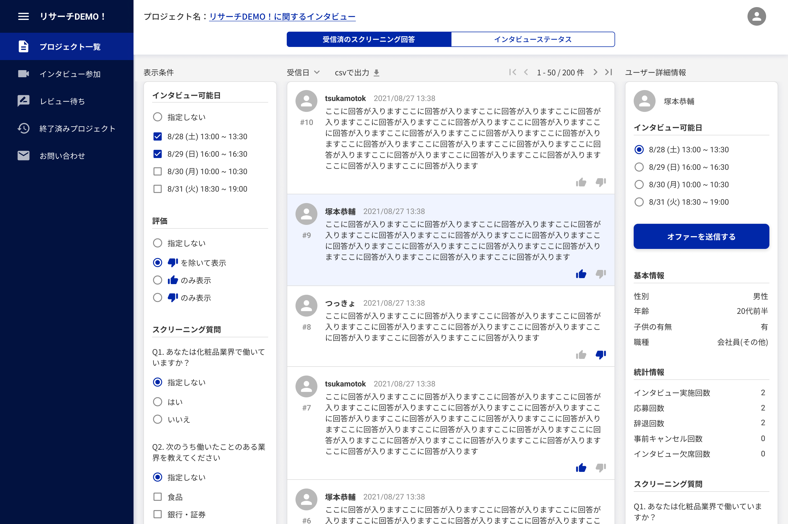

works
サービス紹介ページはこちら
リサーチDEMO！とは
定性調査を行いたい企業と、隙間時間でお小遣いが欲しい消費者をシステム上でマッチングさせ、日程調整から実際のインタビューまで一気通貫で行うことができるデプスインタビューサービスです。
プロジェクト概要
株式会社Marketing Demoが運営するサービス「リサーチDEMO！」の企業側webアプリのフルリニューアルに携わりました。そのうち既存アプリの課題整理から要件定義、デザイン作成全般を担当いたしました。
課題・背景
・サービスを本格的に販売していきたい。
・アプリを操作するにあたりその情報が何の情報かわからない。
・求める消費者とスムーズにインタビューを行いたいが、手順がわからない。
・アプリ全体でトンマナが揃ってなく、サービスとして不安だ。
意図・目的
・売上をあげること。
・情報を明確にし操作に迷わないUI設計とすること。
・スムーズに求める消費者とインタビューができるようにすること。
・一貫性のあるデザインのプロダクトとし、顧客を安心させること
結果・実績
フルリニューアルのリリース後、サービスの売上を達成。
開発プロセス
企画・エンジニアにヒアリングを行い、既存Webアプリの課題整理と要件定義を行いました。
要件定義を元にデザインを作成し、企画・エンジニアと密に連絡をとりながらブラッシュアップさせ、既存WebアプリのUX改善を行いました。
改善点
メニューがアイコンだけで何ができる場所か分からなかったため、各メニューの名称を記載し、ユーザーがどんなことができるメニューか理解出るようにしました。
また、メニューを開閉できるようにすることで、閲覧範囲を広げることができるUIとしました。
プロジェクト作成時、作成までのフローを表示することで、ユーザーが作成完了までの手順をイメージできるようにしました。
プロジェクト一覧の各プロジェクトにインタビューのステータス、アンケートの回答数を記載することで、プロジェクト詳細を開く前にそのプロジェクトの状態を把握できるようにしました。
また、自分と他の人との名前の配色を変えることで、自分の作成したプロジェクトを素早く見つけることができるようにしました。
プロジェクト一覧にユーザーが未完了の行動をアナウンスすることで、ユーザーの行動を促すようにいたしました。
「インタビューしたい消費者の絞り込み」「絞り込んだ消費者の事前アンケートの回答を見比べる」「選択した消費者の詳細情報を閲覧する」ことを画面遷移せず、一画面で操作できるようにすることで、消費者の比較検討からオファーの送信までをスムーズに行えるUI設計としました。
インタビューのステータスが一目で理解できるようなレイアウトにすることで、直感的にタスクの把握をできるようにしました。
インタビュー前にどのようなプロジェクトで、どのような消費者とインタビューするか確認できるようにすることで、ユーザーがスムーズにインタビューを開始できるようにしました。